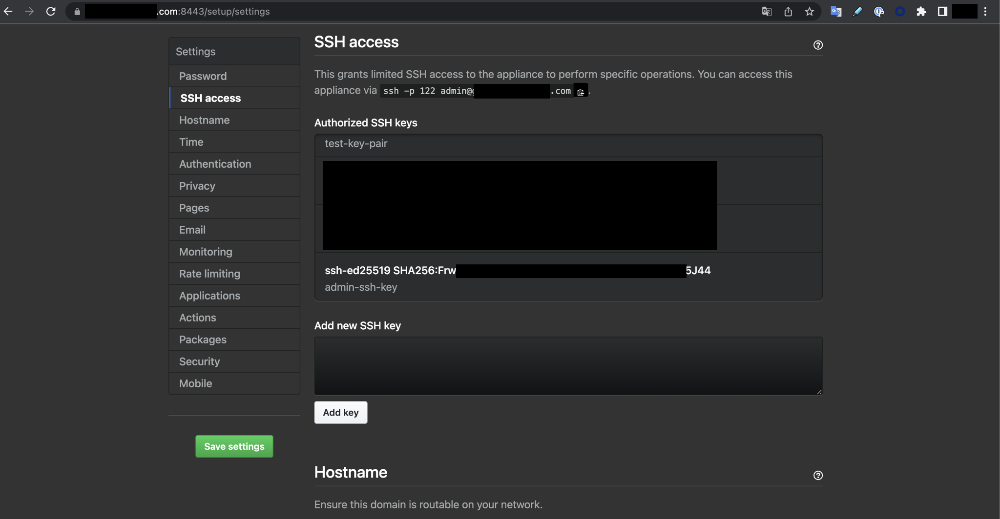

Github Enterprise EC2 이중화 설정
개요
이 글은 Github Enterprise Server의 이중화 구성 및 해제를 설명하는 가이드입니다.
크게 아래 주제를 다룹니다.
- Github Enterprise 인스턴스 2대를 Primary - Replica로 이중화 구성하는 가이드
- 이중화된 Github Enterprise Server 구성에서 Replica 해제 후 인스턴스 중지하기
환경

-
Private Subnet에 위치한 EC2 인스턴스 2대로 구성되어 있습니다.
- 인스턴스 타입 :
r6i.2xlarge(x86_64) - EBS Volume : root 200GiB, data 100GiB
- 인스턴스 타입 :
-
사용중인 Github Enterprise Server 버전은
v3.6.1(Debian 10)입니다.- AMI ID : ami-026a4976f74701223
$ ghe-version GitHub Enterprise Server 3.6.1 ami 2022-08-24 0616a9cb7b
이중화 구성
서버 접속
Replica EC2 인스턴스에 SSH 또는 SSM Session Manager를 사용해서 원격 접속합니다.
Github Enterprise EC2의 경우 관리용 SSH 포트는 Git SSH 액세스와 별도로 관리되며, TCP/122 포트를 통해서만 접속할 수 있습니다.
$ ssh \
-i /path/to/ghe_private_key \
-p 122 \
admin@your.github.com
서버 접속 시 참고할 문서
Github Enterprise Server 원격접속 시 필요한 네트워크 포트 목록 및 접속 방법은 아래 문서들을 참고합니다.
네트워크 포트
Github Enterprise Server v3.6 공식문서
Accessing the administrative shell (SSH)
관리용 SSH에 대한 설명 및 접속방법
복제용 키페어 생성
Replica 인스턴스에서 ghe-repl-setup <PRIMARY_SERVER_IP> 명령어를 실행합니다.
이 명령어를 실행하면 데이터 복제에 사용되는 SSH 키페어가 자동 생성됩니다.
# On "replica" github enterprise EC2.
$ ghe-repl-setup 11.11.11.11
Generating public/private ed25519 key pair.
/home/admin/.ssh/id_ed25519 already exists.
Overwrite (y/n)? Your identification has been saved in /home/admin/.ssh/id_ed25519.
Your public key has been saved in /home/admin/.ssh/id_ed25519.pub.
The key fingerprint is:
SHA256:FrwNgvYlfuXXXXXrXXXXXXmXXXXpFwcr000/O123J45 admin-ssh-key
The key's randomart image is:
...
Connection check failed.
admin@11.11.11.11: Permission denied (publickey).
Connection check with replicas succeeded.
The primary GitHub Enterprise Server appliance must be configured to allow replica access.
Visit http://11.11.11.11/setup/settings and authorize the following SSH key:
ssh-ed25519 XXXXC.............................................................Ox admin-ssh-key
Run `ghe-repl-setup 11.11.11.11' once the key has been added to continue replica setup.
참고: 위 키값에서 연속된 .은 실제 값을 시크릿 처리하기 위한 표기입니다.
마지막줄에 나오는 SSH 키 값을 클립보드에 복사합니다.
ssh-ed25519 XXXXC.............................................................Ox admin-ssh-key
참고: 위 키값에서 연속된 .은 실제 값을 시크릿 처리하기 위한 표기입니다.
복제용 키페어 등록
Replica 서버에서 키페이를 생성한 후 Primary 서버에서 등록합니다. 크게 2가지 방법이 있습니다.
- SSH (CLI)
- Management Console
SSH
Primary 서버의 Administrative SSHTCP/122로 접속합니다.
리눅스 서버에서 ~/.ssh/authorized_keys 파일은 SSH 공개 키를 저장하는 파일로, 서버나 사용자가 원격으로 접속할 때 사용됩니다.
tee 명령어를 사용해서 Replica 서버에서 생성한 SSH 공개키를 authorized_keys 파일에 새로 추가합니다.
echo "ssh-ed25519 <your-public-key> admin-ssh-key" | tee -a /home/admin/.ssh/authorized_keys
해당 파일에 SSH 공개키를 추가하게 되면 Management Console에서도 동일하게 조회가 됩니다.
Management Console
Github Enterprise 관리 콘솔 페이지에 접속해서 값을 입력하고 Add key를 눌러 복제용 키를 등록합니다.
관리 콘솔은 HTTPS 프로토콜에 TCP/8443 포트를 사용합니다. 관리 콘솔 URL 주소는 https://your.github-enterprise.com:8443/setup/settings/와 같은 형식을 지니고 있습니다.

Primary 서버의 Github Enterprise 웹 콘솔 페이지에서 다음 작업을 진행합니다.
복사한 SSH 키 값을 Add new SSH key 란에 입력한 후, Add key 버튼을 클릭해서 등록합니다.
Replica 등록
Primary 서버에 Replica 서버를 등록합니다.
아래 명령어는 Github Enterprise Replica 서버에서만 실행할 수 있습니다.
명령어 형식
# On "replica" github enterprise EC2.
$ ghe-repl-setup <PRIMARY EC2 IP>
명령어 예시
# On "replica" github enterprise EC2.
$ ghe-repl-setup 11.11.11.11
결과값은 다음과 같습니다.
Verifying ssh connectivity with 11.11.11.11 ...
Connection check with primary succeeded.
Connection check with replicas succeeded.
Updating Elasticsearch configuration ...
Elasticsearch isn't listening on tcp/9200.
Copying license and settings from primary appliance ...
Syncing Actions state files and certificates (if applicable) from primary appliance ...
--> Importing SSH host keys...
--> The SSH host keys on this appliance have been replaced to match the primary.
--> Please run 'ssh-keygen -R 22.22.22.22; ssh-keygen -R "[22.22.22.22]:122"' on your client to prevent future ssh warnings.
Copying custom CA certificates from primary appliance ...
Validating configuration
Updating configuration for github-enterprise-com-replica (22.22.22.22)
/data/user/common/github.conf /data/user/common/secrets.conf /data/user/common/cluster.conf /data/user/common/enterprise.ghl /data/user/common/saml-sp.p12 /data/user/common/authorized_keys /data/user/common/ssh_host_* /data/user/actions/states/* /data/user/actions/certificates/*
Configuration Updated
Success: Replica mode is configured against 11.11.11.11.
To disable replica mode and undo these changes, run 'ghe-repl-teardown'.
Run 'ghe-repl-start' to start replicating from the newly configured primary.
ghe-repl-setup 명령어 실행시 Replica 서버에 클러스터와 관련된 다양한 설정파일, 라이센스 파일들을 복제해서 가져오는 걸 확인할 수 있습니다.
복제 시작
Replica 서버에서 복제본 받아오도록 ghe-repl-start 명령어를 실행합니다.
ghe-repl-start로 인해 Primary 서버가 잠시 중단되며 잠깐동안 Github Enterprise 사용자에게 내부 서버 오류 페이지가 표시될 수 있습니다.
# On "replica" github enterprise EC2.
$ ghe-repl-start
전체 복제가 끝나는 데까지는 약 20분 정도 소요되므로 인내심을 가지고 기다려주세요.
복제 진행사항과 관련된 모든 로그는 Primary 서버의 아래 경로에서 확인 가능합니다.
# On "primary" github enterprise EC2.
$ tail -f /data/user/common/ghe-config.log
Replication은 총 4개의 Phase로 구성됩니다.
이는 ghe-repl-status 명령어 실행 후 출력되는 실시간 로그에서 확인할 수 있습니다.
아래는 Replica 서버에서 확인한 ghe-repl-status 명령어 결과입니다.
# On "replica" github enterprise EC2.
$ ghe-repl-start
...
Configuration Phase 1
github-enterprise-com-replica: Nov 25 14:53:01 Preparing storage device...
github-enterprise-com-replica: Nov 25 14:53:02 Updating configuration...
github-enterprise-com-replica: Nov 25 14:53:03 Reloading system services...
github-enterprise-com-replica: Nov 25 14:54:50 Done!
github-enterprise-com-primary: Nov 25 14:52:37 Preparing storage device...
github-enterprise-com-primary: Nov 25 14:52:38 Updating configuration...
github-enterprise-com-primary: Nov 25 14:52:38 Reloading system services...
github-enterprise-com-primary: Nov 25 14:55:44 Done!
Configuration Phase 2
github-enterprise-com-replica: Nov 25 14:55:45 Running migrations...
github-enterprise-com-replica: Nov 25 14:55:45 Done!
github-enterprise-com-primary: Nov 25 14:55:45 Running migrations...
github-enterprise-com-primary: Nov 25 14:57:53 Done!
Configuration Phase 3
github-enterprise-com-primary: Nov 25 14:57:54 Reloading application services...
github-enterprise-com-primary: Nov 25 15:04:09 Done!
Configuration Phase 4
github-enterprise-com-replica: Nov 25 15:05:49 Validating services...
github-enterprise-com-replica: Nov 25 15:05:50 Done!
github-enterprise-com-primary: Nov 25 15:05:49 Validating services...
github-enterprise-com-primary: Nov 25 15:05:53 Done!
github-enterprise-com-primary: Firewall reloaded
github-enterprise-com-replica: Firewall reloaded
Finished cluster configuration
Success: replication is running for all services.
Run `ghe-repl-status' to monitor replication health and progress.
ghe-repl-start 결과값의 마지막 부분에 다음과 같은 메세지가 출력되면 이중화 구성이 정상적으로 완료된 것입니다.
...
Finished cluster configuration
Success: replication is running for all services.
Run `ghe-repl-status' to monitor replication health and progress.
이중화 상태 확인
초기에 Primary 서버에게 git Replication 시점이 과거에 있는 걸 확인할 수 있습니다.
# On "replica" github enterprise EC2.
$ ghe-repl-status
OK: mysql replication is in sync
OK: mssql replication is in sync
OK: redis replication is in sync
OK: elasticsearch cluster is in sync (0 shards initializing, 0 shards unassigned)
CRITICAL: git replication is behind the primary by 150 repositories and/or gists
OK: pages replication is in sync
OK: alambic replication is in sync
OK: git-hooks replication is in sync
OK: consul replication is in sync
하지만 시간이 지나면서 빠른 시간 내에 최근 시점으로 싱크가 맞춰지는 걸 확인할 수 있습니다.
# On "replica" github enterprise EC2.
$ ghe-repl-status
WARNING: mysql replication delay is 29s
OK: mssql replication is in sync
OK: redis replication is in sync
OK: elasticsearch cluster is in sync (0 shards initializing, 0 shards unassigned)
WARNING: git replication is behind the primary by 50 repositories and/or gists
OK: pages replication is in sync
OK: alambic replication is in sync
OK: git-hooks replication is in sync
OK: consul replication is in sync
Primary와 Replica 서버의 격차가 줄어들며 결국 모든 컴포넌트가 싱크가 맞춰집니다.
결과 확인
정상적으로 이중화 구성이 되었는지 모니터링 하려면 Replica 서버에서 아래 명령어를 실행합니다.
# On "replica" github enterprise EC2.
$ ghe-repl-status
$ ghe-repl-status -v # 이중화 상태 자세히 보기
$ ghe-repl-status -vv # 이중화 상태 더 자세히 보기
Replication 구성에 대한 네트워크 연결 가능성Connectivity 통계를 확인하려면 Primary 서버와 Replica 서버 양쪽 모두에서 다음 명령어를 실행합니다.
sudo fping -t 1000 -B 1 -c 5 -i 500 -q `ghe-cluster-nodex` -x
중요
복제(Replication)가 제대로 작동하려면 복제 인스턴스가 포트 TCP/122 및 UDP/1194를 통해 고가용성 환경의 다른 모든 어플라이언스와 통신할 수 있어야 합니다.
Replication 상태에 따라 실행 결과값이 다르게 나옵니다.
# Replication 상태가 정상인 경우 결과값
github-xxx-xxx-replica: xmt/rcv/%loss = 5/5/0%, min/avg/max = 0.17/0.23/0.27
# Replication 상태가 비정상인 경우 결과값
github-xxx-xxx-primary: xmt/rcv/%loss = 5/0/100%
위 경우 Replica 서버와 Primary 서버간의 Network 연결 가능 여부를 반드시 확인합니다. TCP/122와 UDP/1194 포트 중 하나라도 통신이 안되는 경우 위와 같이 %loss 값이 100%로 출력됩니다.
이중화 해제
Replica 서버 접속
모든 이중화 해제에 필요한 명령어 실행은 Replica 서버에서 진행합니다. SSH 또는 SSM Session Manager를 통해 Replica 서버에 원격 접속합니다.
이중화 상태 체크
Replica 서버에서 이중화 상태를 체크합니다.
# On "replica" github enterprise EC2.
$ ghe-repl-status
OK: mysql replication is in sync
OK: mssql replication is in sync
OK: redis replication is in sync
OK: elasticsearch cluster is in sync (0 shards initializing, 0 shards unassigned)
OK: git replication is in sync
OK: pages replication is in sync
OK: alambic replication is in sync
OK: git-hooks replication is in sync
OK: consul replication is in sync
in sync로 출력되는 경우 모든 컴포넌트가 Primary 서버와 실시간 동기화되었다고 이해하면 됩니다.
Primary와 Replica 서버는 v3.6.1 버전을 사용하고 있습니다.
# On "replica" github enterprise EC2.
$ ghe-version
GitHub Enterprise Server 3.6.1 ami 2022-08-24 0616a9cb7b
이중화 중지
Replica 서버에서 실시간 싱크를 중지합니다.
# On "replica" github enterprise EC2.
$ ghe-repl-stop
Phase 1부터 4까지 순차적으로 진행됩니다.
완료까지는 약 15분 걸립니다.
Updating configuration...
gh-greenlabsfin-com-primary: Total reclaimed space: 0B
gh-greenlabsfin-com-replica: Total reclaimed space: 0B
Validating configuration
Updating configuration for gh-greenlabsfin-com-replica (11.11.11.110)
/data/user/common/github.conf /data/user/common/secrets.conf /data/user/common/cluster.conf /data/user/common/enterprise.ghl /data/user/common/saml-sp.p12 /data/user/common/authorized_keys /data/user/common/ssh_host_* /data/user/actions/states/* /data/user/actions/certificates/*
Configuration Updated
Configuration Phase 1
...
gh-greenlabsfin-com-primary: Feb 15 02:11:50 Done!
Configuration Phase 2
gh-greenlabsfin-com-replica: Feb 15 02:11:51 Done!
...
Configuration Phase 3
gh-greenlabsfin-com-replica: Feb 15 02:14:01 Reloading application services...
gh-greenlabsfin-com-replica: Feb 15 02:15:55 Done!
...
Configuration Phase 4
...
Success: Replication was stopped for all services.
To disable replica mode and remove all replica configuration, run 'ghe-repl-teardown'.
이중화 해제하기
Replica 서버를 이중화 해제합니다.
# On "replica" github enterprise EC2.
$ ghe-repl-teardown
git-server-691a9482-6ccd-11ed-8158-0a9dd83cc212 is evacuating
...
git-server-691a9482-6ccd-11ed-8158-0a9dd83cc212 is destroyed
...
Feb 15 02:34:00 Validating services...
Feb 15 02:34:04 Done!
Success: Replication configuration has been removed.
Run `ghe-repl-setup' to re-enable replica mode.
Primary 서버에서도 이중화 상태를 확인합니다.
# On "primary" github enterprise EC2.
$ ghe-cluster-each --replica 'ghe-repl-status'
Clustering is not configured on this host.
위와 같이 실행결과로 Clustering is not configured on this host. 메세지가 출력되는 경우, Replica 서버가 하나도 없다는 의미입니다.
제가 원하는 Replica 인스턴스가 제거된 상황이 되었습니다.
인스턴스 중지
이중화 해제를 완료한 후에는 Replica EC2 인스턴스를 중지합니다.
AWS 콘솔에서 EC2 중지를 실행하거나 AWS CLI를 사용해서 EC2를 중지하는 작업을 진행합니다.
AWS CLI의 경우는 다음과 같이 실행합니다.
$ aws ec2 modify-instance-attribute \
--instance-id i-0xx0x6x17x88be5ed \
--no-disable-api-stop
위 명령어는 Replica EC2 인스턴스에 설정된 중지 방지Stop protection 기능을 해제합니다.
Github Enterprise 이중화 해제까지 완료되었으므로 EC2 인스턴스를 중지합니다.
$ aws ec2 stop-instances \
--instance-ids i-0xx0x6x17x88be5ed
참고자료
이중화 구성 관련 참고자료
Creating a high availability replica
제 경우 Github Enterprise 공식문서를 참조해서 이중화 구성을 정상적으로 완료했습니다.
클러스터 정보 확인하는 방법
$ cat /data/user/common/cluster.conf
클러스터 구성 파일(cluster.conf)은 클러스터의 노드와 이들이 실행하는 서비스를 정의합니다.
Initializing the cluster
이중화 해제 관련 참고자료
고가용성 복제본 제거
GHE 공식문서
Github Enterprise on AWS 구축 가이드
넓고 얕게 Github Enterprise 전반적인 주제를 다루고 있습니다.
제가 직접 작성한 가이드입니다.